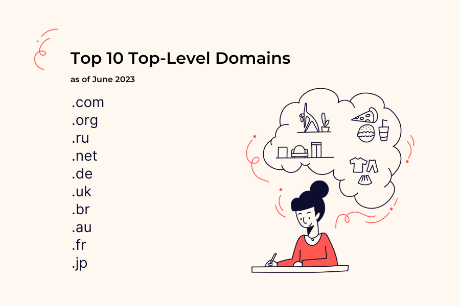

Top Level Domains (TLDs)

What is a TLD?
The last part of a domain name. For example, in google.com, the TLD is .com.
Key Facts
- Managed globally by ICANN (Internet Corporation for Assigned Names and Numbers).
- There are over 1,500 TLDs in existence today.
- Help indicate the purpose or origin of a website.
Generic TLDs (gTLDs)
- .com - Commercial. The most widely used TLD in the world.
- .org - Organisations, often non-profits.
- .net - Originally for network infrastructure.
- .edu - Educational institutions.
- .gov - Government bodies (US-based).
Country Code TLDs (ccTLDs)
- Two-letter codes representing specific countries.
- .ke - Kenya
- .uk - United Kingdom
- .us - United States
- .za - South Africa
- .de - Germany
New TLDs
- ICANN opened up new TLDs 2012 onwards.
- Examples: .app, .shop, .blog, .africa.